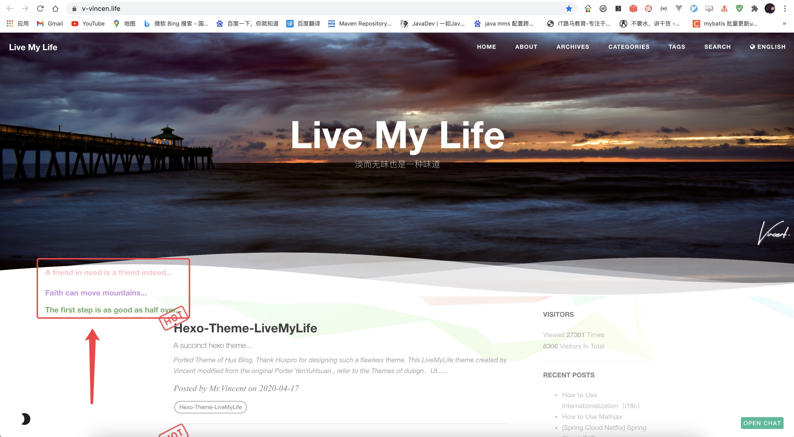
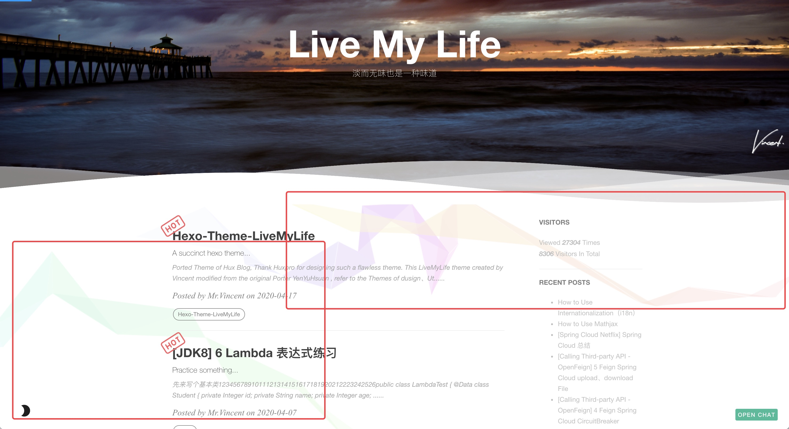

移植 Hux Blog 的主题，感谢 Huxpro 设计了如此完美的主题。
由 Vincent 创建的 LiveMyLife 的主题修改来源 YenYuHsuan，参考主题 dusign、Utone，感谢 dusign、Utone。
# 仓库
Github 仓库地址：https://github.com/V-Vincen/hexo-theme-livemylife
Gitee 仓库地址：https://gitee.com/V_Vincen/hexo-theme-livemylife
# 预览 LiveMyLife 博客 ➾

# 快速开始
为了方便起见，我发布了整个项目，因此您可以按照下面的说明进行操作，然后就可以轻松自定义您自己的博客！
让我们开始！！！
# 安装 Node.js 和 Git
#For Mac | |
brew install node | |
brew install git |
Windows：下载 & 安装 Node.js。-> Node.js
Windows：下载 & 安装 Git。-> Git
# 安装 Hexo
$ npm install -g hexo-cli |
什么是 Hexo?
Hexo 是一个快速、简洁且高效的博客框架。Hexo 使用 Markdown（或其他渲染引擎）解析文章，在几秒内，即可利用靓丽的主题生成静态网页。
# 设置你的博客
$ hexo init blog |
更多的命令 -> Hexo Commands
# 主题使用
# 初始化
cd blog | |
rm -rf scaffolds source themes _config.landscape.yml _config.yml package.json yarn.lock #just keep node_modules | |
git clone https://github.com/V-Vincen/hexo-theme-livemylife.git | |
mv hexo-theme-livemylife/* ./ | |
rm -rf hexo-theme-livemylife | |
npm install |
# 设置主题
修改 theme 属性值，在 _config.yml 配置文件中。
# Extensions | |
## Themes: https://hexo.io/themes/ | |
## Plugins: https://hexo.io/plugins/ | |
theme: livemylife |
# 启动服务
hexo generate # or hexo g | |
hexo server # or hexo s |
启动本地服务器。 默认访问地址 http://localhost:4000/ 。
更多命令 -> Hexo Commands
# 配置
使用您自己的信息修改 _config.yml 配置文件，尤其是以下部分：
# 网址信息配置
将以下信息替换为您自己的信息。
# Site | |
title: Live My Life | |
subtitle: 淡而无味也是一种味道 | |
author: Mr.Vincent | |
timezone: |
# 语言国际化 (i18n)
若要让您的网站以不同语言呈现，您可使用国际化（internationalization）功能。-> 文档：How to Use Internationalization（i18n）
# Internationalization (i18n) Setting | |
language: # At present, only en、cn and tw are supported. You can customize the language，refer to `languages/en.yml`. | |
- en | |
- cn | |
langselect: | |
enable: true # If open, it will automatically generation lang-select button.This button can jump in articles in different languages, but the articles must have the same name. | |
options: # langselect button display options | |
en: English | |
cn: 简体中文 | |
# tw: 正體中文 | |
i18n_dir: :lang | |
permalink: :lang/:title/ | |
new_post_name: :lang/:title.md | |
# hexo-generator-i18n config | |
## Docs: https://github.com/xcatliu/hexo-generator-index-i18n | |
index_generator: | |
per_page: 10 | |
pagination_dir: page | |
path: '' | |
order_by: -date | |
archive_generator: | |
enabled: false | |
per_page: 10 | |
yearly: true | |
monthly: true | |
daily: false | |
order_by: -date |
English 预览：

Chinese 预览：

# CDN 配置
JsDelivr JsDelivr 是一种免费，快速，可靠和自动化的 CDN，可用于开源。如何使用 Jsdelivr？-> 文档：免费 CDN 提速 Github 静态资源访问
# CDN Setting | |
# Docs: https://www.jsdelivr.com/?docs=gh | |
# If Github Pages deploy，you can ues jsdelivr settings | |
# | |
jsdelivr: | |
jsdelivr_url: https://cdn.jsdelivr.net/gh/ | |
github_username: V-Vincen |
注意： Hexo-theme-livemylife 主题中有大量的 css、js 和 images，为了提高访问速度，主题中所有资源文件都使用了 JsDelivr CDN（内容分发）。但仅适用于 Github Pages 部署方式。-> 文档：How to apply JsDelivr CDN in Hexo-theme-livemylife Theme
# 站点设置
将自定义图片放在 img 目录中。
# Site settings | |
SEOTitle: JavaDev | 一如Java深似海 | |
email: hexo-theme-livemylife@mail.com | |
description: "It's an IT blog..." | |
keyword: "Java,v-vincen,v-vincen,livemylife,IT blog,Blog" | |
header-img: img/header_img/newhome_bg.jpg | |
archives-img: img/header_img/archive_bg2.jpg |
# 网站图标设置
favicon: img/avatar/favicon.jpg |
# 签名设置
将您的签名图片复制到 <root>/img/signature 并修改配置文件 _config.yml 。
signature: true # show signature | |
signature-img: img/signature/<your-signature> |
如何制作签名 -> Free Online Signature
# 波浪设置
# Wave settings | |
wave: true |
案例：

# 社交网络服务设置
如果您不想显示它，则可以直接将其删除。
# SNS settings | |
# RSS: true | |
github_username: V-Vincen | |
twitter_username: V_Vincen_ | |
instagram_username: V_Vincen_ | |
# facebook_username: yourAccount | |
# linkedin_username: yourAccount | |
# zhihu_username: yourAccount | |
weibo_username: WVincen |
# 侧边栏设置
将您的头像复制到 <root>/img/avatar 并修改配置文件 _config.yml 。
sidebar: true # whether or not using Sidebar. | |
sidebar-about-description: "I don't know where I am going ,but I am on my way..." | |
sidebar-avatar: img/avatar/vincnet.jpg # use absolute URL, seeing it's used in both `/` and `/about/` | |
widgets: | |
- visitor # busuanzi: https://busuanzi.ibruce.info/ | |
- featured-tags | |
- short-about | |
- recent-posts | |
- friends-blog | |
- archive | |
- category | |
# widget behavior | |
## Archive | |
archive_type: 'monthly' | |
show_count: true | |
## Featured Tags | |
featured-tags: true # whether or not using Feature-Tags | |
featured-condition-size: 0 # A tag will be featured if the size of it is more than this | |
## Friends | |
friends: [ | |
{ | |
title: "V_Vincen", | |
href: "https://v-vincen.life/" | |
},{ | |
title: "Teacher Ye", | |
href: "http://teacherye.com/" | |
} | |
] |
# 评论系统设置
Hexo-Theme-LiveMyLife 主题暂时支持三种评论方式。我使用 gitalk 为默认评论系统。
# Gitalk
Gitalk 是基于 GitHub Issue 和 Preact 的现代化的评论组件。 有关详细的配置方法，请参考 Gitalk 官方文档。
# Gitalk Settings | |
# Doc: https://github.com/gitalk/gitalk/blob/master/readme-cn.md | |
gitalk: | |
owner: # 'GitHub repo owner' | |
admin: # ['GitHub repo owner and collaborators, only these guys can initialize github issues'] | |
repo: # 'GitHub repo' | |
clientID: # 'GitHub Application Client ID' | |
clientSecret: # 'GitHub Application Client Secret' | |
perPage: 10 # Pagination size, with maximum 100. | |
pagerDirection: last # Comment sorting direction, available values are last and first. | |
createIssueManually: false # By default, Gitalk will create a corresponding github issue for your every single page automatically when the logined user is belong to the admin users. You can create it manually by setting this option to true | |
language: en # Localization language key, en, zh-CN and zh-TW are currently available. | |
maxCommentHeight: 250 # An optional number to limit comments' max height, over which comments will be folded.Default 250. | |
proxy: https://cors-anywhere.azm.workers.dev/https://github.com/login/oauth/access_token # GitHub oauth request reverse proxy for CORS. For example, the demo url is 'https://cors-anywhere.herokuapp.com/https://github.com/login/oauth/access_token'.You should deploy your own proxy url as in this issue https://github.com/gitalk/gitalk/issues/429. |
# Gitment
Gitment 是一个基于 GitHub Issues 的评论系统，可以在前端使用它，而无需任何服务器端实现。有关详细的配置方法，请参见 Gitment 官方文档。
## Gitment Settings | |
## Doc: https://github.com/imsun/gitment | |
gitment: | |
owner: # Your GitHub ID. Required. | |
repo: # The repository to store your comments. Make sure you're repo's owner. Required. | |
client_id: # GitHub client ID. Required. | |
client_secret: # GitHub client secret. Required. | |
desc: # An optional description for your page, used in issue's body. Default ''. | |
perPage: 10 # An optional number to which comments will be paginated. Default 20. | |
maxCommentHeight: 250 # An optional number to limit comments' max height, over which comments will be folded. Default 250. |
# Disqus
如果你想要使用 Disqus 评论系统，则必须有代理。
# Disqus settings | |
disqus_username: your-disqus-ID |
# 站点分析设置
如何配置站点分析？-> 文档：Analytics and Sitemap Settings
# Analytics settings | |
# Google Analytics | |
ga_track_id: UA-xxxxxx-xx # Format: UA-xxxxxx-xx | |
# Baidu Analytics | |
ba_track_id: ba_track_id |
# 站点地图设置
如何配置站点地图？-> 文档：Analytics and Sitemap Settings
# Google sitemap | |
sitemap: | |
path: sitemap.xml | |
# Baidu sitemap | |
baidusitemap: | |
path: baidusitemap.xml | |
baidu_push: true |
# 置顶图标设置
我使用的置顶图标是键头，你可以在 sourcre/css/images 目录下替换你自己想要的图标。
# 文章标签
您可以选择是否显示博文标签。
home_posts_tag: true |
案例：

# Markdown 渲染器
我使用的 markdown 渲染引擎插件是 hexo-renderer-markdown-it。
# Markdown-it config | |
## Docs: https://github.com/celsomiranda/hexo-renderer-markdown-it/wiki | |
markdown: | |
render: | |
html: true | |
xhtmlOut: false | |
breaks: true | |
linkify: true | |
typographer: true | |
quotes: '“”‘’' |
# 安装 Mathjax（数学公式渲染器）
要安装 Mathjax，请单击 How to Use Mathjax 以获取详细的教程。
# Anchorjs（锚点）设置
如果你想要更改文章目录标题前部的锚点 “❡”，则可以到 layout/_partial/anchorjs.ejs 目录下进行更改。如何使用 anchorjs，请参阅 AnchorJS 以获取详细示例。
# Anchorjs Settings | |
anchorjs: true # if you want to customize anchor. check out line:26 of `anchorjs.ejs` |
async("//cdn.bootcss.com/anchor-js/1.1.1/anchor.min.js",function(){ | |
anchors.options = { | |
visible: 'hover', | |
placement: 'left', | |
icon: '❡' | |
// icon: 'ℬ' | |
}; | |
anchors.add().remove('.intro-header h1').remove('.subheading').remove('.sidebar-container h5'); | |
}) |
# 博文置顶
# article top | |
top: true |
Hexo-theme-livemylife 主题添加了文章顶部功能，只要在您的 markdown 笔记中添加属性 sticky: number 配置，文章按此数字排序。
案例：

# 文章字数统计设置
WordCount 是 Hexo 的文章字数统计插件。有关详细的配置方法，请参见 WordCount 文档。
# Dependencies: https://github.com/willin/hexo-wordcount | |
# Docs: https://www.npmjs.com/package/hexo-wordcount | |
wordcount: true |
# Busuanzi（不蒜子）设置
Busuanzi 是一个网站流量统计插件。如何使用 Busuanzi，有关详细示例，请参见 Busuanzi 文档。
## Dependencies: https://busuanzi.ibruce.info/ | |
## Docs: https://ibruce.info/ | |
busuanzi: true |
# 顶部滚动进度条设置
# top scroll progress | |
scroll: true |
# 著作权声明设置
tip: | |
enable: true | |
copyright: Say what you think... # If the copyright is blank, the default value will be used. |
# 社交分享博文设置
#Docs: https://github.com/overtrue/share.js | |
share: true |
# Viewer（图片预览）设置
Viewer 是一个简单的 jQuery 图片预览插件。让我们首先看一个 demo。有关详细配置，请参见 Viewer 官方文档。 如果要修改 Viewer 的 options 设置，则可以到 sourcre/js/viewer/pic-viewer.js 目录下修改。
# Viewer config | |
viewer: true |
# 主题模式设置
Hexo-Theme-LiveMyLife 主题暂时支持两种主题模式。
# ThemeColor config | |
themecolor: | |
enable: true | |
mode: dark # themecolor mode light or dark, default light |
明亮主题模式预览：

黑暗主题模式预览：

# 鼠标点击效果设置
# Mouseclick config | |
mouseclick: | |
enable: true | |
content: | |
- The first step is as good as half over... | |
- Laugh and grow fat... | |
- Man proposes God disposes... | |
- When all else is lost the future still remains... | |
- Wasting time is robbing oneself... | |
- Sharp tools make good work... | |
- Cease to struggle and you cease to live... | |
- A friend in need is a friend indeed... | |
- Faith can move mountains... | |
color: | |
- '#9933CC' | |
- '#339933' | |
- '#66CCCC' | |
- '#FF99CC' | |
- '#CCCCFF' | |
- '#6666CC' | |
- '#663399' | |
- '#66CC99' | |
- '#FF0033' |
鼠标点击效果预览：

# 背景绸带效果设置
ribbonDynamic: true |
背景绸带效果预览：

# 背景线画布效果设置
bglinecanvas: true # The special effects will take up a lot of cpu resorces, please open it carefully. |
背景线画布效果预览：

# 搜索设置
# Dependencies: https://github.com/V-Vincen/hexo-generator-zip-search | |
search: | |
enable: true | |
path: search.json | |
zipPath: search.flv | |
versionPath: searchVersion.json | |
field: post | |
# if auto, trigger search by changing input | |
# if manual, trigger search by pressing enter key or search button | |
trigger: auto | |
# show top n results per article, show all results by setting to -1 | |
top_n_per_article: 1 |
# Gitter（聊天室）
Gitter 是一个聊天和网络平台，通过消息、内容和发现，帮助管理、发展和连接社区。 详细配置方法请查看 Gitter 官方文档。
## Docs:https://gitter.im/?utm_source=left-menu-logo | |
## | |
gitter: | |
room: your-community/your-room |
# 部署
替换为你自己的仓库地址。
deploy: | |
type: git | |
repo: https://github.com/<yourAccount>/<repo> # or https://gitee.com/<yourAccount>/<repo> | |
branch: <your-branch> |
# Hexo 常用命令
hexo new post "<post name>" # you can change post to another layout if you want | |
hexo clean && hexo generate # generate the static file | |
hexo server # run hexo in local environment | |
hexo deploy # hexo will push the static files automatically into the specific branch(gh-pages) of your repo! |
# 有一个好的体验 _
如果你喜欢该主题，请 Star！不胜感激你的 Follow！比心！